Each view is cut into patches: 512 visual tokens from 2 views enter a backbone with billions of parameters, and the cost grows with the number of tokens.
Distance-Preserving Compression for Fast Inference and Adaptation of Vision-Language-Action Policies
Under review, 2027
Vision-language-action (VLA) models often represent each visual observation with hundreds of tokens and pass this sequence through a backbone with billions of parameters, making inference slow and adaptation costly for each new robot or task. Shortening the sequence can reduce these costs, but compression can discard visual information needed for reliable control. Prior learned compression methods use only the action-prediction loss as their training objective, without explicitly constraining which visual information is retained. We show that preserving pairwise distances between visual-token sequences enables substantial compression without sacrificing task success. Motivated by our finding that visual-token changes have low-dimensional structure, we formulate visual-token compression as a compressed-sensing problem: the distance-preservation loss explicitly constrains what the compressed sequence retains, while the action loss trains the policy to act on the compressed tokens. Across OpenVLA-OFT and a π0.5-based VLA, PAIR shortens the sequence by more than 14×, accelerates inference by 2.4–2.8× with no success drop, and cuts adaptation wall-clock time roughly in half. On LIBERO, PAIR matches uncompressed OpenVLA-OFT. On six real-robot tasks and both backbones, PAIR matches the base policy on static tasks and succeeds far more often on reactive tasks, where the scene changes during action-chunk prediction.
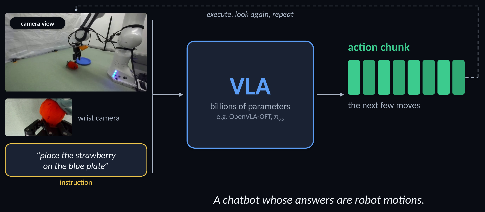
A camera view, a wrist camera, and an instruction (“place the strawberry on the blue plate”) go into a VLA with billions of parameters (e.g. OpenVLA-OFT, π0.5). Out comes an action chunk: the next few moves. Execute, look again, repeat.
A chatbot whose answers are robot motions.
Each view is cut into patches: 512 visual tokens from 2 views enter a backbone with billions of parameters, and the cost grows with the number of tokens.
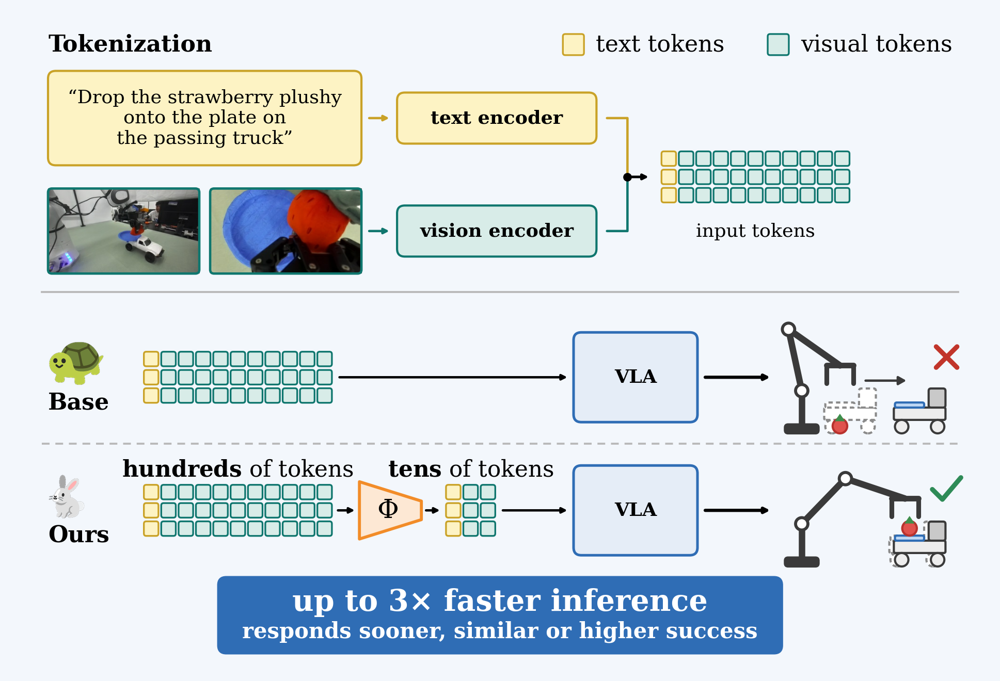
“Place the strawberry on the blue plate” — and the plate rides on a moving truck. OpenVLA-OFT, 1× speed.
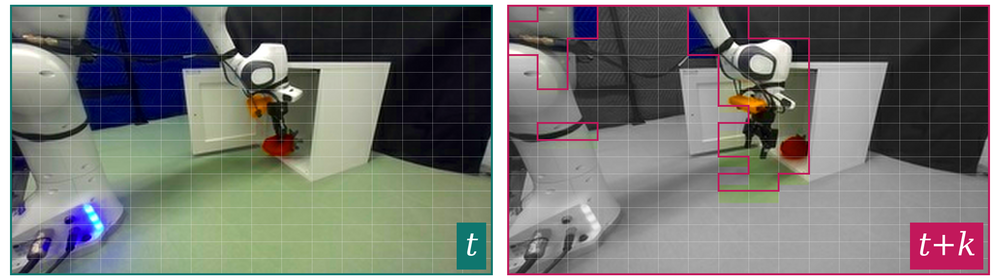
Only the arm and the object it holds move.
median over 3000 pairs of LIBERO views
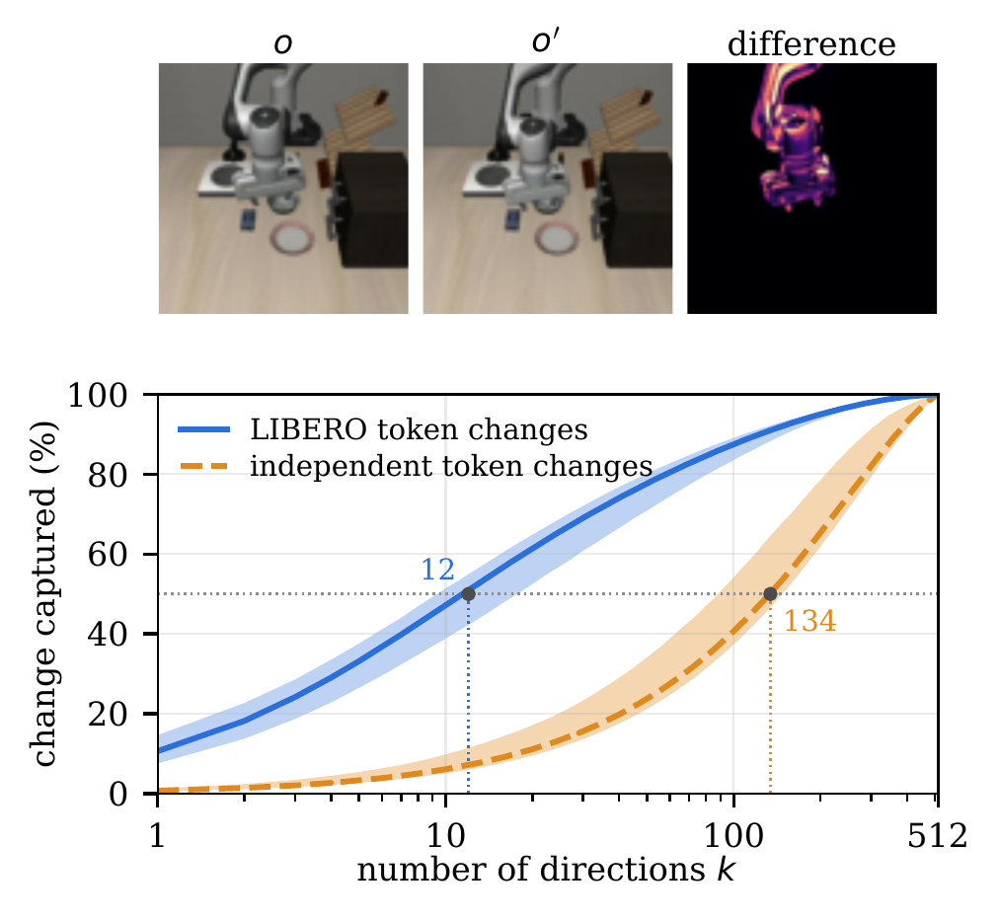
Visual-token changes concentrate in few token-axis directions. Top: one camera view from two observations \(o\) and \(o'\) in a LIBERO episode, and their pixel difference. Bottom: SVD decomposes each visual-token difference into directions ordered by the share they capture. Blue shows the median cumulative share over 3000 same-episode pairs from 100 episodes; shading spans the 5th–95th percentiles. Orange independently randomizes each token’s feature direction while preserving its change magnitude, removing relationships among token changes. Capturing half the difference requires a median of 12 directions before randomization and 134 afterward. This gap shows that token changes are related rather than independent, revealing structure that compression can exploit.
Lots of room to compress.
Plate far away → keep moving. Plate right below → release. Similar views, different actions.
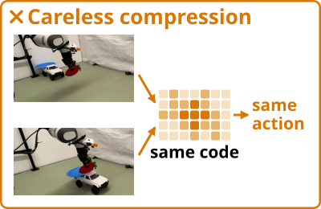
The robot can’t tell them apart.
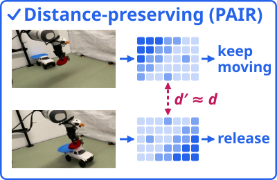
Different views stay different.
One episode: a thin curve. Flatten one way: moments collide. Flatten another way: all stay apart.
Compressed sensing: far fewer measurements (tokens) suffice, if distances between points are roughly kept.
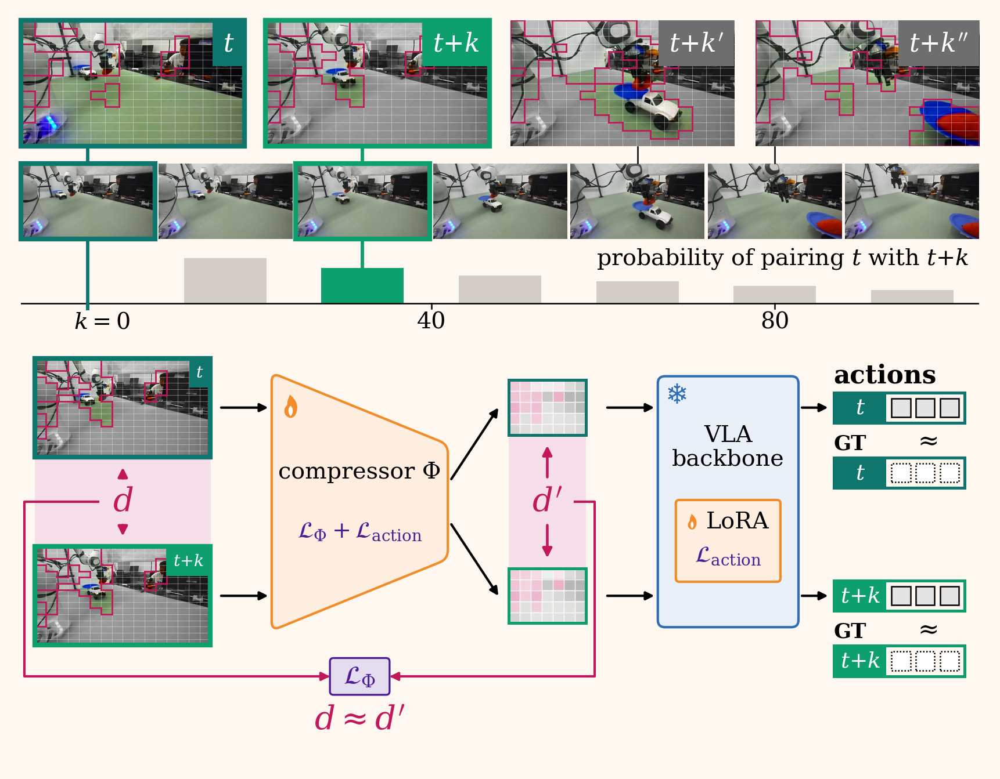
The camera views go through the frozen vision encoder into 512 tokens. A small, trainable measurement head Φ turns them into 35 tokens, which the frozen VLA backbone (+ LoRA) reads together with the instruction to produce actions. Pretrained weights stay frozen. Only Φ and the LoRA adapters are trained.
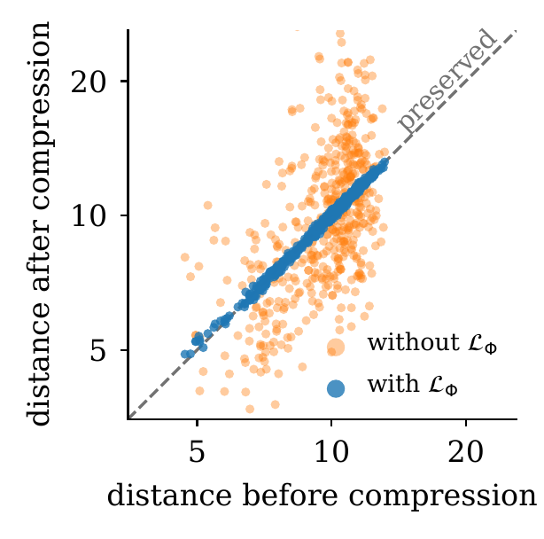
Pairwise-distance preservation. Each point compares distance after and before compression for 480 same-episode LIBERO-Long pairs spanning one action chunk to a full episode. The head trained without \(\mathcal{L}_\Phi\) inflates distances by about 80× overall, while the one trained with it preserves their scale; we divide out each head’s global scale to expose per-pair distortion. With \(\mathcal{L}_\Phi\) (blue), 90% of compressed distances remain within ±3% of their originals; without it (orange), 90% range from 0.6× to 1.8×.
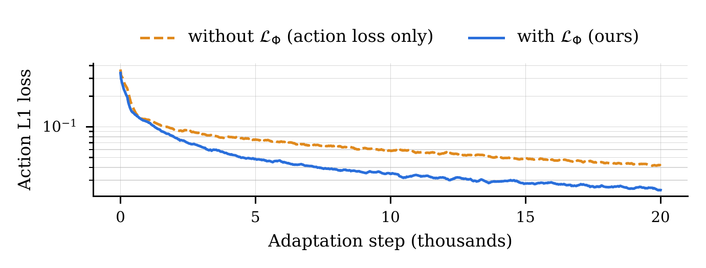
The distance-preservation loss improves action-loss convergence. Action L1 loss on LIBERO-Long at 35 tokens with and without \(\mathcal{L}_\Phi\). With \(\mathcal{L}_\Phi\), the action loss is lower from the first few thousand steps onward; at 20k steps it is 0.024 with \(\mathcal{L}_\Phi\) against 0.042 without it.
| Policy | Tokens | ms ↓ | Hz ↑ | Speed-up |
|---|---|---|---|---|
| OpenVLA-OFT | 512 | 155.0 | 6.4 | 1.0× |
| + PAIR | 35 | 55.4 | 18.1 | 2.8× |
| π0.5 | 512 | 129.0 | 7.8 | – |
| IMLE-VLA | 512 | 44.6 | 22.4 | 1.0× |
| + PAIR | 36 | 18.8 | 53.1 | 2.4× |
IMLE-VLA = π0.5 with a faster action head; IMLE-VLA + PAIR is 6.9× faster than π0.5. Measured on the robot’s A6000 at batch size 1.
| Policy | Hours ↓ | Speed-up |
|---|---|---|
| OpenVLA-OFT | 14.2 | 1.0× |
| + PAIR | 7.9 | 1.8× |
| IMLE-VLA | 14.3 | 1.0× |
| + PAIR | 7.4 | 1.9× |
About half the training. Wall-clock time to the same action loss on L40S GPUs.
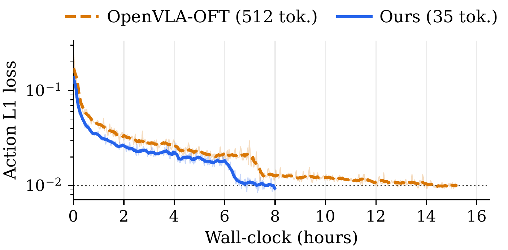
PAIR reduces adaptation time. Action L1 loss against wall-clock time while adapting OpenVLA-OFT on the swap-plushies task using four L40S GPUs and the same batch size for both runs. The dotted line marks the stopping loss of 0.01 used by OpenVLA-OFT’s recipe; PAIR reaches it in 7.9 hours against 14.2 hours for the uncompressed policy.
| LIBERO success (%) | Spatial | Object | Goal | Long | Avg | Tokens | Speed-up |
|---|---|---|---|---|---|---|---|
| OpenVLA-OFT (uncompressed) | 97.6 | 98.4 | 97.9 | 94.5 | 97.1 | 512 | 1.00× |
| VLA-Cache | 98.3 | 97.5 | 98.3 | 95.4 | 97.4 | 374 | 1.26× |
| LightVLA | 98.4 | 98.4 | 98.2 | 94.6 | 97.4 | 78 (avg.) | 1.62× |
| GridS (our reimpl., 512→8) | 86.8 | 97.0 | 95.0 | 89.0 | 92.0 | 8 | 3.0× |
| PAIR (512→8) | 97.2 | 99.6 | 97.5 | 93.0 | 96.8 | 8 | 3.0× |
| PAIR (512→35) | 98.6 | 99.0 | 98.4 | 94.6 | 97.7 | 35 | 2.8× |
Prior methods report ≤ 1.9×. Speed-ups use each paper’s own uncompressed OpenVLA-OFT baseline and hardware; PAIR and GridS rows measured in our runs.
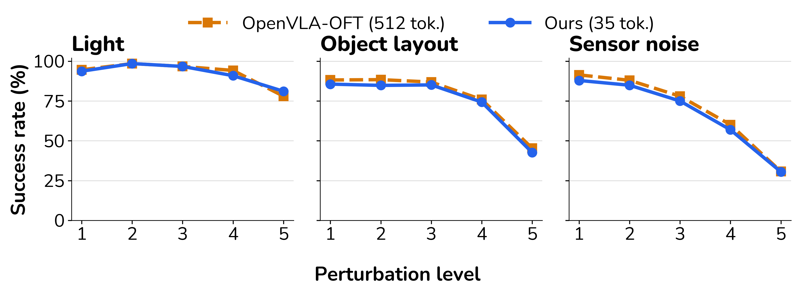
Robustness to unseen visual perturbations. Success rate on LIBERO-Plus under light, object-layout, and sensor-noise perturbations at five severity levels. With 35 tokens, PAIR remains within a few percentage points of uncompressed OpenVLA-OFT across all 15 settings.
OpenVLA-OFT · 2× speed
IMLE-VLA · 2× speed
OpenVLA-OFT · 2× speed
PAIR on OpenVLA-OFT · 2× speed
Same success as uncompressed: every task differs by at most 1 of 20 trials.
“Place the strawberry on the blue plate” — the plate rides on a moving truck. OpenVLA-OFT · 1× speed. PAIR (left) vs base (right).
“Knock the LEGO tower off the back of the passing truck”. OpenVLA-OFT · 1× speed. PAIR (left) vs base (right).
Successes out of 40 on the two moving-target tasks
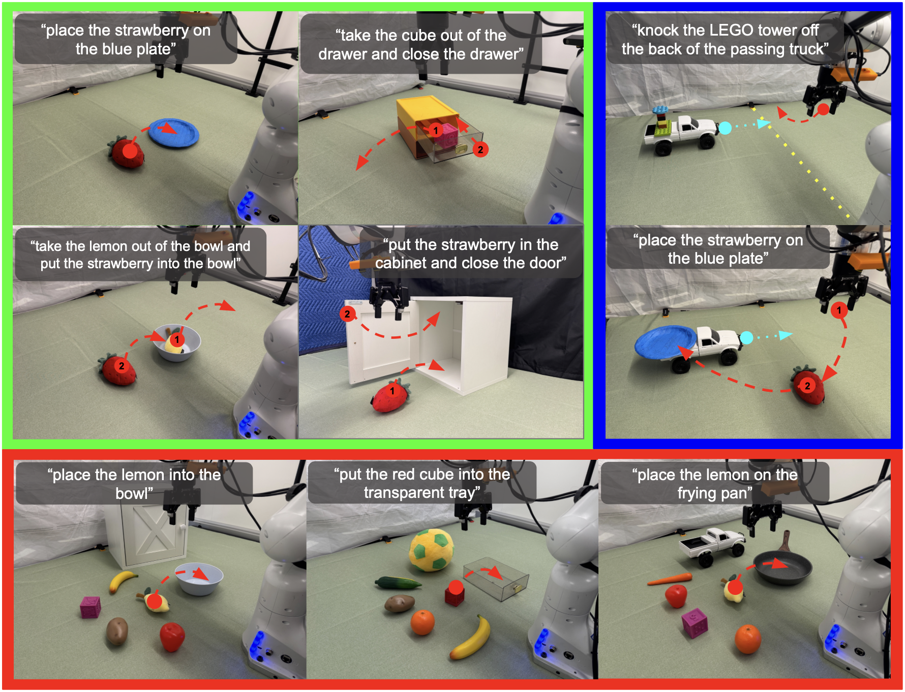
| Task (successes / 20) | OpenVLA-OFT | IMLE-VLA | ||
|---|---|---|---|---|
| PAIR | base | PAIR | base | |
| Plushy on a plate | 19 | 20 | 20 | 20 |
| Swap plushies in a bowl | 16 | 16 | 19 | 20 |
| Cube out of a drawer, close it | 15 | 15 | 19 | 19 |
| Plushy into a cabinet, close door | 10 | 11 | 15 | 14 |
| Truck (moving target) | 18 | 9 | 20 | 16 |
| Tower on a passing truck | 13 | 0 | 18 | 12 |
| Lemon on a pan | 17 | 17 | 19 | 20 |
| Cube in a transparent tray | 16 | 16 | 19 | 20 |
| Lemon in a bowl | 17 | 18 | 19 | 19 |
Real-robot tasks. Green: the four static tasks. Blue: the two reactive tasks. Red: the three out-of-distribution variants of the plate task. Instructions are shown per panel; red arrows mark the desired actions, cyan arrows show the RC truck’s motion, and the yellow dotted line marks the strike point.
What’s next: better compressor architectures; keep control-relevant changes only; longer tasks, more VLAs; world models.
@article{hosseinkhani2026pair,
title = {PAIR: Distance-Preserving Compression for Fast Inference and Adaptation of Vision-Language-Action Policies},
author = {Hosseinkhani, Kian and Aghabozorgi, Mehran and Zheng, Ken Jiankun and Suzuki, Kaito and Zhang, Andy and Niu, Dantong and Darrell, Trevor and Lui, Kry Yik Chau and Herzig, Roei and Li, Ke},
year = {2026},
note = {Under review}
}